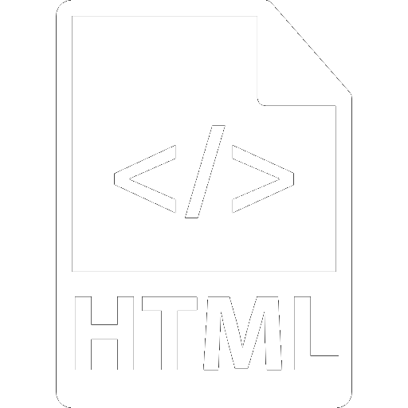

HTML

Autor: Tim Berners-Lee
Propuso un nuevo sistema de "hipertexto" para compartir documentos, BernersLee
une fuerzas con el ingeniero en sistemas Robert Cailliau con quien crean la
especificación de la World Wide Web (W3).